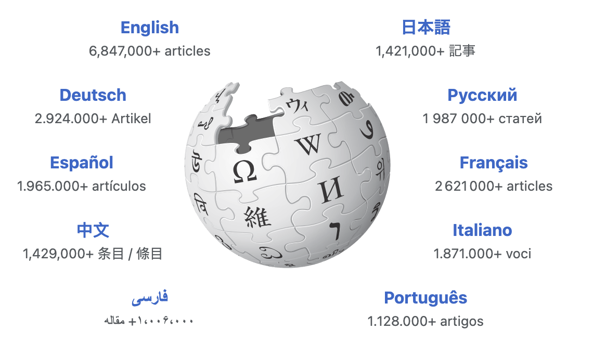
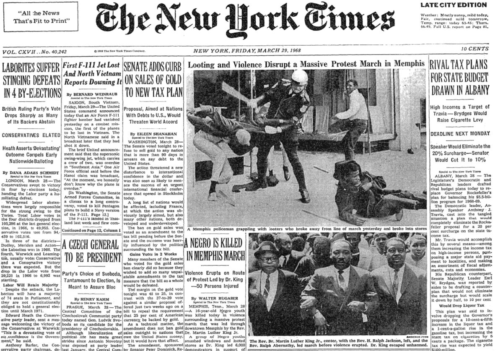

Datasets
Large-scale datasets and archives I contributed to

Web-scraped, manipulated, and analyzed over a million news articles mentioning 34 social movements over the twentieth century, published in national, local, and African American newspapers.
Contributed two chapters and all data visualizations to Edwin Amenta and Neal Caren's Rough Draft of History: A Century of US Social Movements in the News (Princeton University Press, 2022).
Currently using Large Language Models (LLMs) to expand the PONs dataset.
Web-scraped foreign-invested enterprises in China data from the Ministry of Commerce website.
Led a team of graduate students from UC San Diego and compiled a dataset of Green Public Procurements in China.
Scraped, manipulated, and analyzed the creation and diffusion of 60 policies across 245 Wikipedia language editions.
Presented at Wiki Workshop 2023 and Wikimania 2024.

China's Cultural Revolution in Memories: CR/10 is an experimental oral history project. It collects ordinary people's memories of China's Great Proletarian Cultural Revolution (1966–1976).
Interviews I conducted are posted on University of Pittsburgh's Digital Collections website and featured in the documentary The Revolution They Remember (see trailer on YouTube).